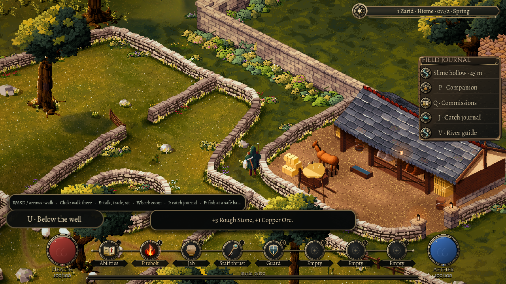
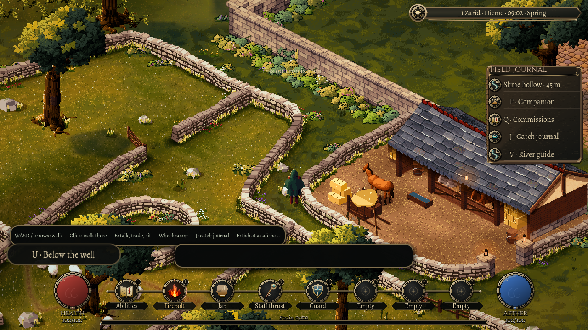

A workable seam
A walk beyond Oakwell can now bring back something the town can use. A standing rock, a mining pick, and a little room in your satchel are enough to begin.
Wenna has a pick to sell. Take it through the south gate to the pasture's outcrops and work a reachable face. The first blow can uncover a copper stain, a dark iron seam or a pale edge of quartz. Rough stone goes into the same satchel as everything else you carry.

There is only so much workable material in each rock. Its contents belong to that place in the seeded world, and the marks remain when you leave. Returning after quitting does not renew the reserve. A spent outcrop keeps its firm base; the hillside, the wall beside it and the way through the pasture stay where they were.
A full bag leaves the rock alone. You need room for the whole strike's stone and mineral before either is taken. That makes a return trip useful: sell the material to Wenna, or put actual iron ore toward one of the town's supply orders, and come back ready to work.

This is the first surface-quarrying pass in the playable town. The pick has a visible swing, but its weight and hand contact still need work. Prospecting, worn tools and digging into the land are ahead. For now, a small part of the country has become a place to work, with something finite to find and something useful to bring home.